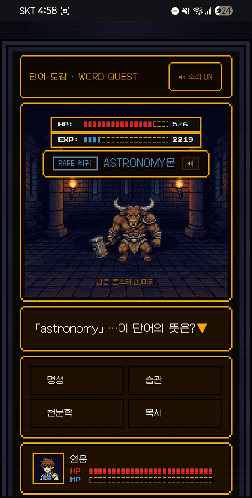
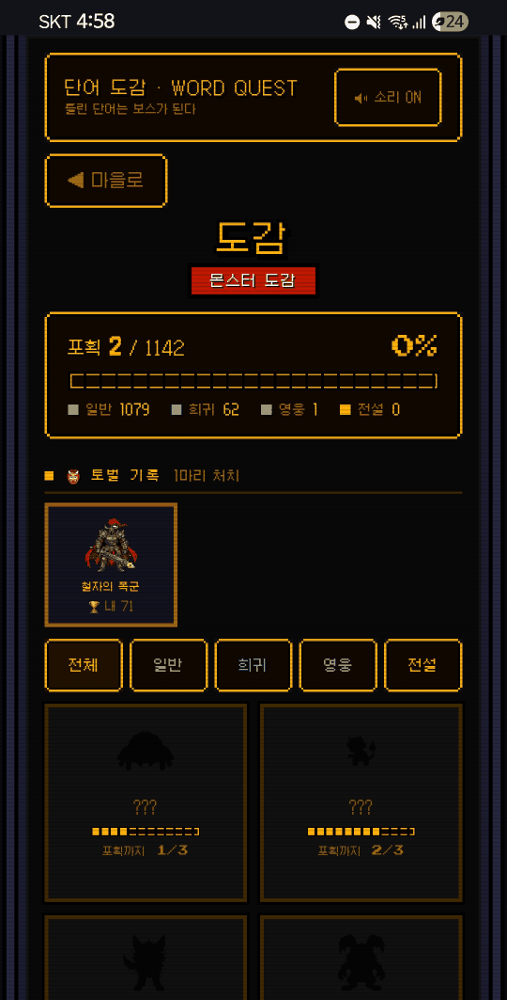
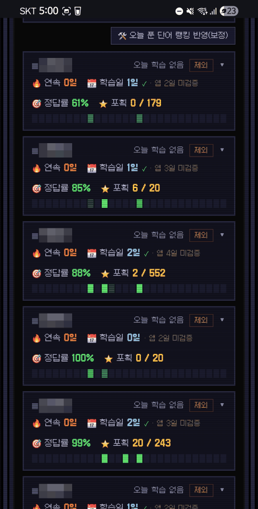
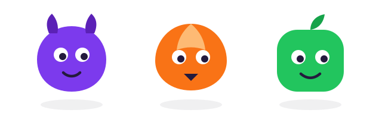

학교·학원 선생님을 위한 안내
단어 숙제를,
아이들이 먼저 하게
실제 학교 수업에서 사용 중인 영어 단어 학습 프로그램. 한 학년 5개 반이 사용했고, 학생 110명 설문에서 69%가 ‘기존 암기 방식보다 낫다’고 답했습니다.
- 실제 학교 5개 반 사용
- 학원 한 반 4주 체험
- 설치 없이 브라우저로
- 장기 약정 없음
영상 대신, 선생님이 실제로 보시는 화면을 그대로 보여드립니다
실제 사용 화면입니다. 학생 이름과 학교명은 가렸습니다.
선생님의 하루
단어 시험지 만들고, 채점하고, 숙제 안 해온 아이들 확인하고…
정작 아이들은 단어장을 펴는 순간 지루해합니다.
화면이 말합니다
아이들은 게임처럼 즐기고,
선생님은 데이터로 확인합니다.



WORD QUEST(단어도감)에서는 문제를 풀어 몬스터를 잡고, 도감을 모으고, 반 전체가 보스에 도전합니다. 그 모든 기록이 선생님 대시보드에 쌓입니다.
실제 사용 화면입니다. 학생 이름과 학교명은 가렸습니다.
선생님 기능
준비는 5분, 확인은 한눈에
-
5분 세팅
엑셀에서 단어를 복사해 붙여넣으면 끝
-
교재 사진 스캔
교재를 찍으면 단어–뜻이 자동으로 등록
-
반 대시보드
누가 했는지, 정답률, 우리 반 최다 오답 TOP 10
-
반 전체 공동보스 협동
반 아이들의 학습이 모여 보스를 잡는 협동 이벤트
“안 하고 했다고 하면요?”
연속 학습일과 학습량은 서버가 직접 관측한 값이라 학생 쪽에서 바꿀 수 없습니다. 앱이 보고한 값과 서버가 확인한 값을 대시보드에서 구분해 보여드립니다.
무엇이 달라지나
단어를 외워오는 과정이 이렇게 바뀝니다
단어 시험은 지금 보시던 대로 보시면 됩니다. 이건 시험을 대신하는 게 아니라, 아이들이 시험 전에 외워오는 과정을 대신합니다.
-
지금“다음 시간까지 외워와” 하고 끝난다
바뀜배포하면 아이들 화면에 바로 도착한다
-
지금아이들이 단어장을 펴다 만다
바뀜몬스터를 잡으려고 먼저 켠다
-
지금외워왔는지는 시험을 봐야 안다
바뀜시험 전에 누가 얼마나 했는지 보인다
-
지금했다고만 하면 확인할 길이 없다
바뀜서버가 관측한 기록으로 확인한다
-
지금어떤 단어가 약한지 감으로 안다
바뀜우리 반 최다 오답 TOP 10 으로 본다
-
지금안 외워온 아이를 시험 보고 나서 안다
바뀜시험 전에 알고 미리 챙긴다
이미 교실에서
실제 학교에서 영어 선생님이
수업·숙제로 사용 중입니다
한 학년 5개 반에서 쓰고 있고, 2026년 7월에 학생 110명에게 직접 물었습니다.
69% ‘기존 암기 방식보다 낫다’
쓰고 있는 학생 110명에게 직접 물어본 결과입니다.
50% 정해진 분량을 넘겨서 학습
자발적으로 정해진 분량을 초과 학습한 학생 다수. 절반이 “더 했다”고 답했습니다.
79% ‘없어지면 아쉽다’
내일부터 못 쓰게 된다면 어떻겠냐고 물었습니다.
75% 숙제가 아니어도 다시 쓰겠다
개학 후에도 쓰겠다(34%) 또는 시험기간에 쓰겠다(41%)고 답했습니다.
절반이 시키지 않은 분량까지 했습니다. 왜 그랬는지 물었습니다.
- “오늘 단어 외울 수 있는 한계치를 끝내고 싶어서”
- “오기가 생겨서 틀린 걸 다 맞고 싶었다”
- “정해진 분량만으론 공부가 안 되서”
- “하다 보니 재밌어지는데 20단어로 끝내긴 아쉬워서”
- “더 많은 단어를 외우고 싶어서”
- “단어 잘 외워져서”
설문에 적힌 답을 그대로 옮겼습니다. 이름은 밝히지 않습니다.
숫자만으로 판단하기 어려우시면 시연을 요청하셔도 됩니다. 선생님이 보시게 될 화면을 함께 보며 설명드립니다.
모든 학생에게 맞지는 않았습니다
7%는 ‘예전 방식이 낫다’고 답했고, 25%는 개학 후에는 안 쓸 것 같다고 했습니다. 그중 한 학생이 이렇게 적었습니다.
“저는 종이에 적힌 뜻을 외우는 걸 선호해서 별로라고 한 거지, 이걸로 단어 공부에 몰입하는 사람도 있을 거고 호불호가 갈리는 사이트라고 생각합니다.”
숫자를 부풀리지 않겠습니다. 반 전체가 좋아하는 도구는 없다고 생각합니다. 한 반에 4주만 써보시고 우리 반에 맞는지 직접 보시는 편이 빠릅니다.
설문에 남긴 실제 코멘트 (익명)
학생들의 말
몬스터를 잡는 방식이 쾌감있다
하다 보니 시간 가는 줄 모르고 했어요
틀린 단어를 반복해서 학습할 수 있다는 게 가장 좋았다
뜻을 고르는 것뿐 아니라 단어를 직접 입력하는 것도 있어서 스펠링까지 외울 수 있는 점이 좋았다
이런 사이트 만들어줘서 너무 고마워, 넌 내 구세주나 다름없어
덕분에 단어 잘 외우고 있습니다
하다 보니 흥미가 생겨 자연스레 계속하게 되었다
단어 외울 때 유용하게 잘 쓰고 있습니다

만든 사람
매주 직접 업데이트하고 있습니다
WORD QUEST는 고등학교 1학년 개발자가 만들었습니다. 제 학교 친구들이 매일 쓰는 모습을 보며, 매주 직접 업데이트하고 있습니다.
교육 현장의 의견을 바탕으로 매주 개선하고 있습니다. 여러 학교와 학원에서 공통으로 필요한 기능을 우선 반영합니다.
요금
2026년 9월, 선착순 3개 학원 파일럿
제작자가 세팅부터 직접 함께하기 위해, 먼저 3개 학원만 모십니다. 학교는 지금처럼 무료입니다.
학원 파일럿
한 반 4주 무료 체험
- 단어 등록과 초기 세팅 지원
- 체험 종료 후 월 요금제 — 시작 가격은 문의 시 안내
- 장기 약정·위약금 없음
- 체험 후 계속 이용할지는 원장님이 결정
장기 약정과 위약금이 없습니다. 한 반에서 먼저 사용해보고 계속 이용할지 결정할 수 있습니다. 3개 학원이 차면 문의 순서대로 다음 차수를 안내드립니다 — 문의는 언제든 열려 있습니다.
도입 절차
선생님이 하실 일은 세 가지뿐입니다
-
1
문의 남기기 1분
학교·학원 이름과 연락처만 적어주시면 됩니다. 제작자가 직접 읽고 답장드립니다.
-
2
반 만들기 함께 세팅
반 개설과 학생 참여 방법은 제작자가 연락드려 함께 잡아드립니다. 선생님이 학생 계정을 하나씩 만드실 필요는 없습니다.
-
3
단어 배포하기 5분
엑셀에서 붙여넣거나 교재를 찍어 올리고, 받을 반을 고른 뒤 배포하면 끝입니다. 여러 반에 한 번에 보낼 수 있습니다.
자주 묻는 것
궁금하실 만한 것을 먼저 적었습니다
그럼 단어 시험은 어떻게 하나요?
지금 보시던 대로 보시면 됩니다. 이건 시험을 대신하는 프로그램이 아닙니다. 아이들이 시험 전에 단어를 외워오는 과정을 대신합니다. 평가 방식은 그대로 두시고, 준비 과정만 바꾸시면 됩니다. 달라지는 건 아이들이 더 외워온 상태로 시험을 본다는 것, 그리고 누가 안 하고 왔는지 시험 전에 아신다는 것입니다.
학생 계정을 제가 다 만들어야 하나요?
아니요. 반을 만들고 학생이 참여하는 방법은 도입할 때 제작자가 함께 세팅해 드립니다. 선생님이 학생 명단을 일일이 입력하실 필요는 없습니다.
학생이 안 하고 했다고 하면 어떻게 아나요?
연속 학습일과 학습량은 서버가 직접 관측한 값이라 학생 쪽에서 바꿀 수 없습니다. 앱이 보고한 값과 서버가 확인한 값을 대시보드에서 구분해 표시하므로, 숙제를 실제로 했는지 선생님이 판단하실 수 있습니다.
학교에서 스마트폰을 못 쓰는데요.
설치가 필요 없는 웹 서비스입니다. 브라우저만 있으면 PC·태블릿·스마트폰 어디서든 들어옵니다. 앱스토어 설치나 별도 프로그램이 필요하지 않습니다.
우리 교재 단어를 그대로 쓸 수 있나요?
네. 엑셀이나 한글 문서에서 단어[탭]뜻 형태로 복사해 붙여넣으면 그대로 등록됩니다. 교재를 사진으로 찍어 올리면 단어와 뜻을 자동으로 읽어 등록하는 기능도 있습니다.
수업에 어떻게 넣나요? 시간이 많이 드나요?
주로 숙제로 씁니다. 단어를 배포해 두면 학생이 각자 풀고, 선생님은 다음 수업 전에 대시보드에서 누가 했는지와 최다 오답만 확인하시면 됩니다. 수업 중 활동으로 쓰셔도 됩니다.
반이 여러 개인데 다 쓸 수 있나요?
네. 반을 여러 개 만들고, 한 번 만든 단어 묶음을 여러 반에 한꺼번에 배포할 수 있습니다. 대시보드는 반별로 따로 봅니다.
광고나 결제 유도가 있나요?
없습니다. 광고를 붙이지 않고, 학생에게 결제를 유도하는 화면도 없습니다. 아이들이 보는 화면에는 학습과 게임 요소만 있습니다.
학습 기록을 엑셀로 내려받을 수 있나요?
아직 안 됩니다. 지금은 화면에서 보는 것까지만 가능합니다. 요청을 남겨주시면 개선 우선순위에 반영하겠습니다.
학생 정보는 어떻게 다루나요?
학생의 학습 기록은 담당 선생님이 보시라고 있는 것입니다. 이 페이지에 실린 화면도 학생 이름과 학교명을 모두 가려서 올렸습니다. 학교 규정에 맞춰 확인이 필요하신 부분은 문의 주시면 자세히 안내드리겠습니다.
학원에서 쓰면 무엇이 달라지나요?
아이들이 단어를 외워온 상태로 수업에 옵니다. 누가 안 하고 왔는지 수업 전에 알 수 있어서, 수업 시간을 확인하는 데 쓰지 않으셔도 됩니다. 누가 했고 어디서 틀렸는지는 반별 대시보드에 쌓이니, 학부모 상담 때 그대로 보여드릴 수 있습니다. 한 반 4주를 무료로 써보시고 판단하시면 됩니다.
학교는 왜 무료인가요? 나중에 청구되나요?
지금 이 프로그램을 매일 쓰는 건 제 학교 친구들입니다. 학교에서 쓰이는 걸 보며 만들었기 때문에 학교는 무료로 드립니다. 나중에 청구하지 않습니다. 학원은 한 반 4주 무료 체험 후 월 요금제로 운영하며, 계속 이용할지는 체험이 끝난 뒤 원장님이 결정하시면 됩니다.
우리 반에 필요한 기능이 없으면요?
문의로 남겨주시면 검토해서 개선 우선순위에 반영합니다. 교육 현장의 의견을 바탕으로 매주 개선하고 있고, 여러 학교와 학원에서 공통으로 필요한 기능을 우선 반영합니다.
만든 사람이 고등학생인데, 계속 운영되나요?
솔직하게 말씀드리면, 그 점이 걱정되시는 게 당연합니다. 그래서 학교는 무료이고, 학원은 장기 약정과 위약금 없이 한 반 4주 무료 체험부터 시작합니다. 맞지 않으면 언제든 멈추셔도 손해가 없습니다. 지금은 제 학교 친구들이 매일 쓰고 있어서, 매주 직접 고치고 있습니다.
도입 문의
한 반부터 조용히 시작해 보세요
문의 내용을 확인한 뒤 제작자가 직접 연락드립니다. 시연만 요청하셔도 괜찮습니다.
폼이 어려우시면 ranha.projects@gmail.com 으로 바로 보내주셔도 되고, 인스타그램 @r.xanha 로 메시지를 주셔도 됩니다.